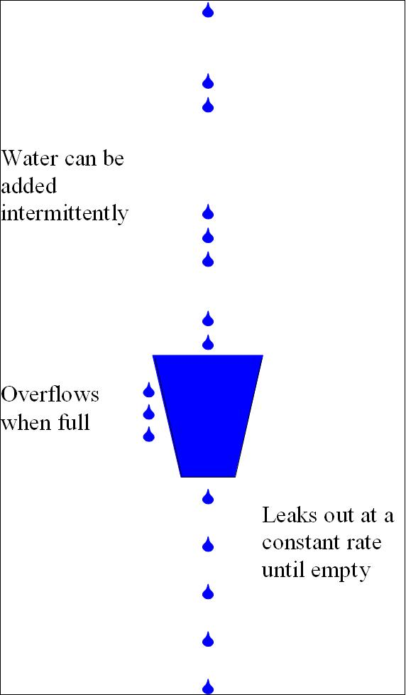
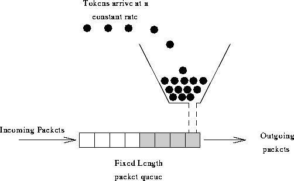
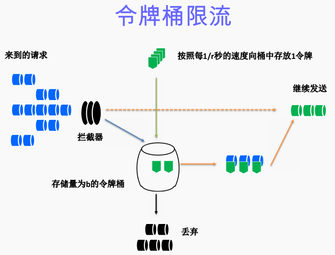

限流算法
简单总结一下网络传输中的常见流量控制算法：漏桶算法和令牌桶算法
漏桶算法

一个形象的解释是：
- 水（请求）从上方倒入水桶，从水桶下方流出（被处理）；
- 来不及流出的水存在水桶中（缓冲），以固定速率流出；
- 水桶满后水溢出（丢弃）。
这个算法的核心是：缓存请求、匀速处理、多余的请求直接丢弃。
令牌桶算法

算法思想是：
- 令牌以固定速率产生，并缓存到令牌桶中；
- 令牌桶放满时，多余的令牌被丢弃；
- 请求要消耗等比例的令牌才能被处理；
- 令牌不够时，请求被缓存。
相比漏桶算法，令牌桶算法不同之处在于它不但有一只“桶”，还有个队列，这个桶是用来存放令牌的，队列才是用来存放请求的。
从作用上来说，漏桶和令牌桶算法最明显的区别就是是否允许突发流量(burst)的处理，漏桶算法能够强行限制数据的实时传输（处理）速率，对突发流量不做额外处理；而令牌桶算法能够在限制数据的平均传输速率的同时允许某种程度的突发传输。
算法描述的另一个版本：

假如用户配置的平均发送速率为r，则每隔1/r秒一个令牌被加入到桶中（每秒会有r个令牌放入桶中）；
假设桶中最多可以存放b个令牌。如果令牌到达时令牌桶已经满了，那么这个令牌会被丢弃；
当一个n个字节的数据包到达时，就从令牌桶中删除n个令牌（不同大小的数据包，消耗的令牌数量不一样），并且数据包被发送到网络；
如果令牌桶中少于n个令牌，那么不会删除令牌，并且认为这个数据包在流量限制之外（n个字节，需要n个令牌。该数据包将被缓存或丢弃）；
算法允许最长b个字节的突发，但从长期运行结果看，数据包的速率被限制成常量r。对于在流量限制外的数据包可以以不同的方式处理：（1）它们可以被丢弃；（2）它们可以排放在队列中以便当令牌桶中累积了足够多的令牌时再传输；（3）它们可以继续发送，但需要做特殊标记，网络过载的时候将这些特殊标记的包丢弃。
Nginx按请求速率限速模块使用的是漏桶算法，即能够强行保证请求的实时处理速度不会超过设置的阈值。